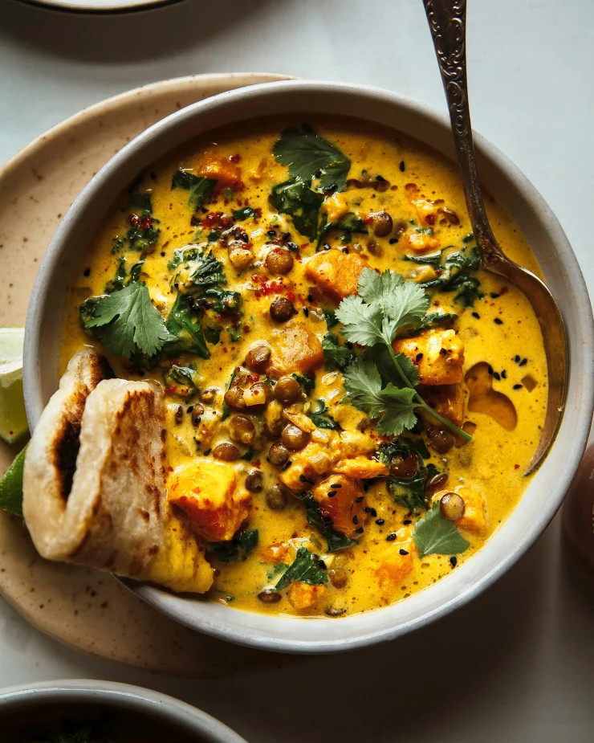
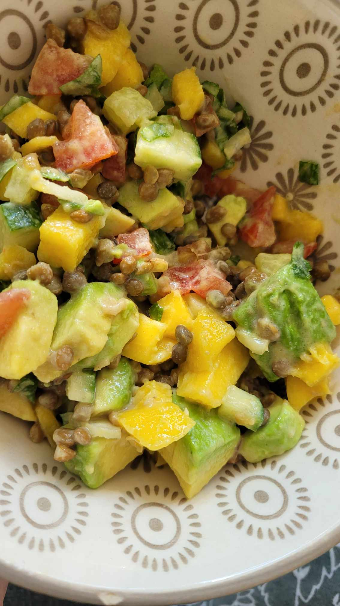
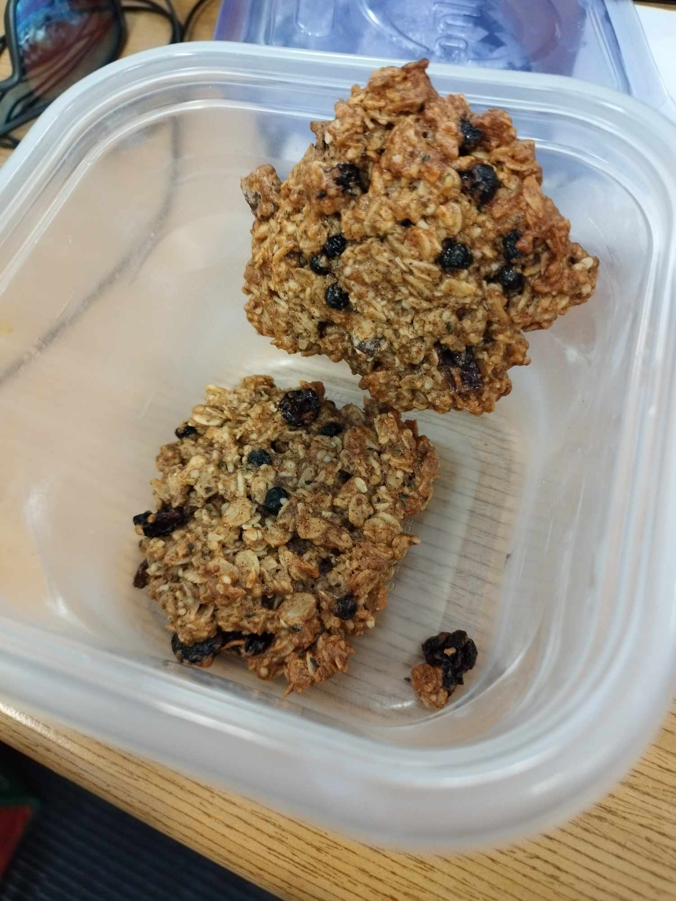
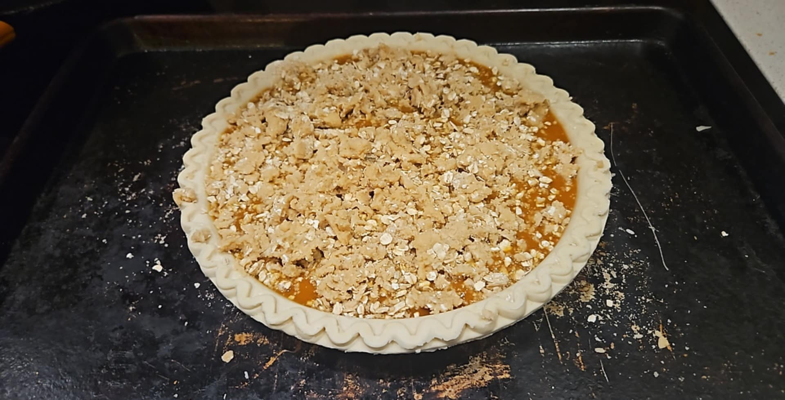
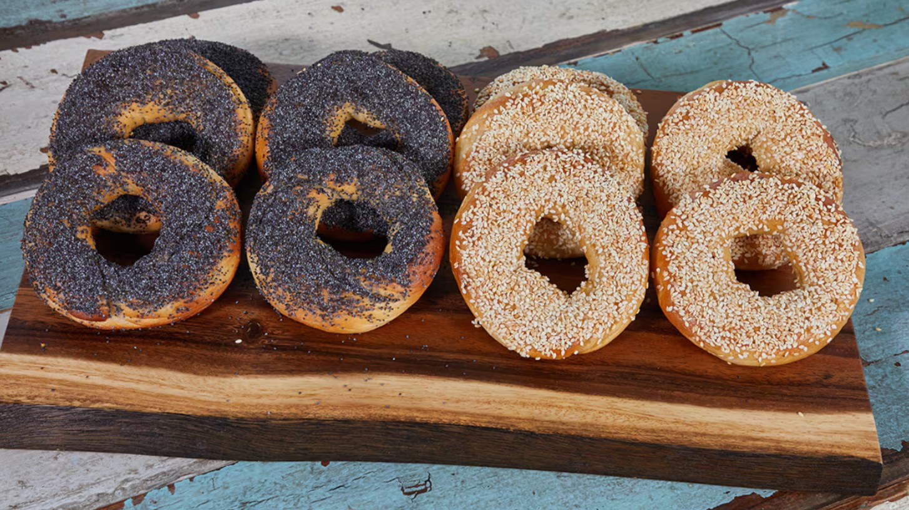
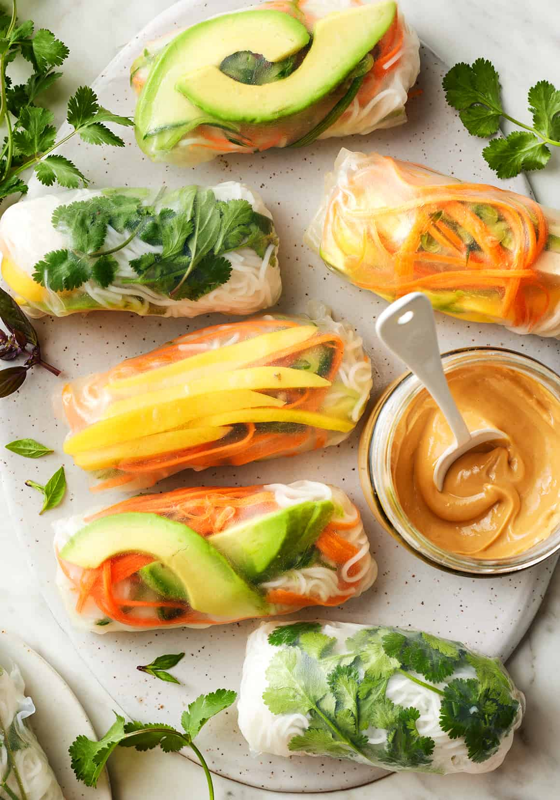

Baked Zucchini Chickpea Curry
Modified
Moroccan-Style Chickpea Stew
Modified
Ginger Sweet Potato Coconut Milk Stew

Lentil, Mango & Avocado Salad
Original
Vegan Breakfast Cookies
Modified
Granola
Original
Pumpkin Pie
Modified
Homemade Oat Milk

Montreal Bagels

Homemade Pizza Dough
